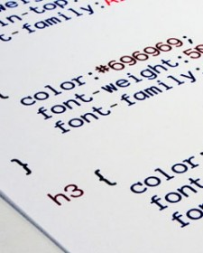
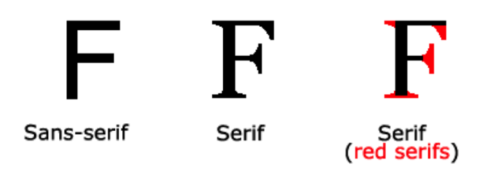

CSS YAZILAR ve YAZI TİPLERİ
Bu sayfada HTML sayfanızda kullandığınız yazıların değiştirebileceğiniz belli başlı özellikleri (renk, hiza, kalın, yazı tipi vb) hakkında bilgi verilecektir.
color:Yazı Rengi
Yazının rengini belirlemenizi sağlar.
p { color:blue; }

text-align: Hizalama
Yazının yatay yönde ne şekilde hizalanacağını belirtmenizi sağlar. En çok kullanılan dört hizalama yöntemi:
1.left:sol
2.right:sağ
3.center:ortala
4.justify:iki yana yasla
Aşağıda paragrafların iki yana yaslanacağını belirttik:
p { text-align: justify; }
font-family: Yazı Tipi Belirlemek

Yazı tipleri klasörümüzü açtığımızda birçok yazı tipi görürüz. Bunları HTML sayfamızda kullanmak için adını belirtmemiz gerekir.
İşte bu kod yazı tipi seçmemizde bize yardımcı olacaktır.
h1 { font-family: Times New Roman; }
p { font-family: Times New Roman, Arial, Helvatica; }
a { font-family: Sans-serif; }
Yukarıdaki birinci örnekte sadece tek yazı tipi adı belirttik (Times New Roman), ancak bir sonrakinde aralarına
virgül koyarak daha fazla belirttik. Bu tarz kullanımlarda öncelikle dikkate alınan ilk verdiğimiz yazı tipi olacaktır.
Eğer verdiğimiz yazı tipi o kullanıcıda yoksa bir sonraki ile görüntülenecektir
font-size: Yazının Büyüklüğü (Puntosu)
Yazı büyüklüğünü font-size ile belirtiriz.Ölçü birimleri olarak punto(pt),piksel(px) vb kullanabiliriz.
Örneğin yazımızın 12 punto olması için yazmamız gereken komut:
h2 { font-size: 12pt; }
14 piksellik bir büyüklüğe sahip olmasını istiyorsak gereken komut:
h2 { font-size: 14px; }
font-style: İtalik (Sağa Yatık) Yazmak
Yazımızın sağa yatık (italic) olması için aşağıdaki kodu kullanabiliriz.
h2 { font-style: italic; }
font-weight: Kalın Yazmak
Yazımızın kalın (bold) olmasını istiyorsak aşağıdaki kodu kullanmalıyız.
h2 { font-weight: bold; }